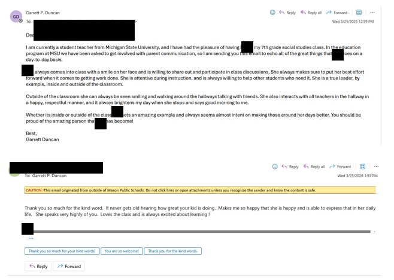

This example shows an email I wrote at the end of the second trimester to a parent regarding their child's actions inside and outside of the classroom. The student always came in with a smile on her face and lifted up those around her spiritually, emotionally, and academically. I believe it is so important to celebrate children who do this, and conveying this celebration to parents can be extremely uplifting for parents and students. The next day, this student came in with a huge smile on her face and was so happy that I told her mom about her actions inside and outside of the class. This allows students to know that we are watching them, and doing this is positively reinforcing their good behaviour. While at my placement, I haven’t had many opportunities to interact with parents; sometimes sending something as simple as an email as a check-in can be pivotal in creating healthy relationships with parents.